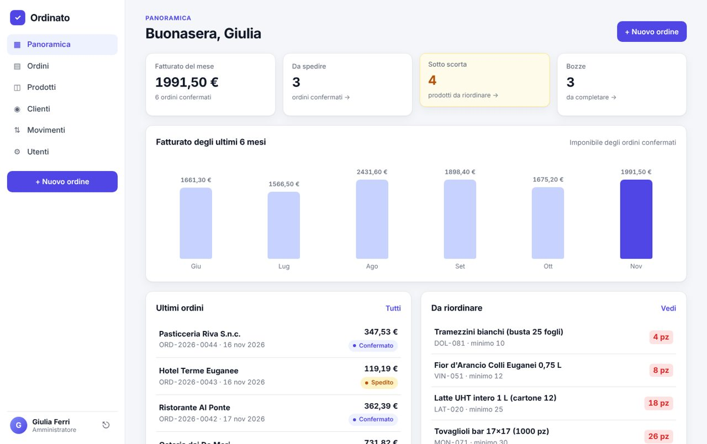

Laravel + Vue · Full-stack
Ordinato
Gestionale per una piccola azienda di distribuzione: ordini, clienti, listino e magazzino. API REST in Laravel e interfaccia in Vue 3.
- Alla conferma dell'ordine la merce si scarica dal magazzino (transazione con lock)
- Ruoli e permessi, login con Sanctum, PDF dell'ordine
- 26 test PHPUnit, GitHub Actions, Docker
Demo su server gratuito: la prima apertura può richiedere fino a un minuto. Accesso con un clic come Amministratore o Operatore.